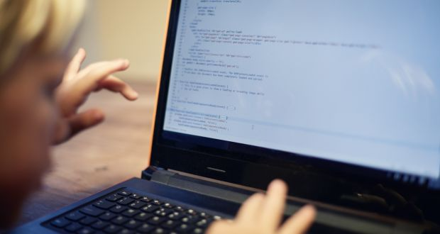

The island of saints and scholars is as redundant a phrase as any other Irish cliche we choose to perpetuate.
That being said, the nation’s reputation for religious devotion and high levels of literacy wasn’t fabricated by the geniuses at Carrolls Irish Gift Store. It was once true. For it to be true again, however, your command of the modh coinníolach can’t help you. Modh coinníolach, mo problems.
A whole new tongue – the language of computers – will be what separates the educated from the ignorant masses of tomorrow. Understanding how to write code for computers is already becoming one of the most highly prized skill sets anyone can have in the global economy. Here’s why:
All major tech companies, from Google to Facebook, aggressively compete to hire gifted young coders. In the Silicon Valley area, for example, some reports suggest engineering graduates from Stanford University expect their starting salary to be nothing less than $100,000-120,000.
“It’s fair to say that for school-leavers looking to maximise their potential income, few other skills open the door to as many well-paying and varied careers,” says Prof Rory O’Connor, head of the school of computing at Dublin City University.
Coding bridges the universal divide. It is the one language that connects different nationalities and countries. “We live in trying times and are pummelled each day by the news of cultural divisiveness,” says Doreen Lorenzo, founding director of the centre for integrated design at the University of Texas in Austin and board member and adviser for several startups. “If we look for common ground to bring countries together, coding is one of the rare exceptions. Everyone speaks the same language. There are no prejudices and no boundaries. People are unified to create.
While many more jobs will continue to be lost to automation, ultimately it is coders who control what is automated. “You will always be in demand despite the predictions of your demise,” says Lorenzo. “Machines are machines. As they become smarter the fear is that human jobs may be replaced by the machine. That is true, but someone will have to code those machines. As those machines learn and begin to “code” themselves, humans will create and programme the next evolution of artificial intelligence. After all, humans have the empathetic ability to see when something new should be created.”
Coding is used in almost all aspects of life and work now, be it directly or indirectly. It’s not just for companies in the tech sector. “An increasing number of businesses rely on computer code, from accountants using complex spreadsheets, to artists and designers using graphics software,” says Prof O’Connor. “Tensions between engineers and business people can arise due to a misunderstanding or lack of appreciation for the engineer’s job. An understanding of coding, across business functions, can eliminate such disconnect.”
Literature and maths are two disciplines frequently polarised – formally and academically but consequently by individuals also. Coding straddles the divide between the two. It is the language of maths and has the power to be used for both creative and technical pursuits. “Computational thinking is a vital skill for the future,” says O’Connor. “While not every job in the future will involve coding, by learning to code or at least to understand the basic language of computers, you will develop an appreciation of how software engineers use maths and algorithms in code and thereby learn how to problem solve and to think both logically and creatively.”
Programming is still in its infancy. In fact, two of the very first programming languages ever invented are still being used today: Fortran (developed in 1957) and Cobol. “This does not mean that we are using old technology,” says Josue Balandrano Coronel from the Texas advanced computing centre at the University of Texas at Austin. “Those programming languages are being used in very narrow contexts. Even so, this shows us programming has barely started on its own evolutionary path. UNIX was developed in 1969 and TCP/IP (the protocol powering “the internet”) was introduced as the standard in 1982 while the first iPhone was introduced in 2007. So although it may appear as if technology is advancing rapidly, we are witnessing something that is growing exponentially with much room for improvement. Fifty years from now, programming will not be anything like we know it today.”
Some will remember the scenes from the 1980s as thousands of coal miners took to the streets in pointless protest against the inevitable demise of their industry. Industries rise and fall as new technologies emerge. But we’re not likely to see code miners losing their jobs anytime soon. “This is the beauty of being a software developer,” says Coronel. “Not a single piece of software is built in solitude. There’s a team behind it, meaning two projects can never be the same. This makes programming an art. There will always be problems to solve. Computers are and will continue to be the cornerstone to building great things.”
Second only to AI, the talk of the town for techies is “big data”. Being able to analyse large sets of data has always been an important yet difficult task. However, while we may have far easier access to data, it is arguably harder than ever to make sense of. Regardless, answers to fundamental questions are literally all around us but only those who speak the language of computers will ever be able to translate them. “Analysing data is not only beneficial to getting answers but also to understanding which questions we should be asking,” says Coronel.
Apart from companies in the technology sector, there are an increasing number of businesses relying on computer code. No wonder that eight of the top 25 jobs this year are tech positions, according to Glassdoor. A software engineer could just as easily find themselves working at Apple, as they could in a hospital, or at an automotive manufacturer.
The Bureau of Labor Statistics (BLS) projects that employment specifically for computer programmers will decline 8% to 302,200 positions over the next decade as businesses outsource projects to less expensive contract workers overseas.
This last finding is the result of researchers broadening the scope of their analysis to include coding skills across five major job categories:
The skills were defined as using a computer program to write instructions to a computer as opposed to using established applications. The researchers looked at programming languages including JavaScript and HTML for building websites, statistical programs R and SAS, AutoCAD programs for engineers, and other all purpose programming languages such as Java, Python, and C++.
The report used data drawn from 26 million U.S. online job postings collected in 2015 and other data from the BLS. It looks at the job market demand for coding skills in order to reveal the specific jobs and skills that employers are seeking.
One major revelation: Half of all programming openings are in industries outside of technology. Among them:
As a result, coding has become a core skill that bolsters a candidate’s chances of commanding a high salary. Burning Glass researchers found that jobs that require coding skills pay up to $22,000 per year more, on average. “For students looking to increase their potential income, few other skills open the door to as many well-paying careers,” they write in the report. Nearly half (49%) of all jobs that pay more than $58,000 require some coding skills, according to their analysis.
What’s most in demand? The report found that the highest demand was for programming languages with broad applicability. Other skills in demand include:
Obviously, positions in IT require more specialization, yet positions in science that use mathematical computing programs such as Python, don’t need them on a daily basis.
Acquiring such knowledge used to land squarely in the environs of higher education. Now we know that while tech’s current most in demand job of data scientist usually requires an advanced degree in math and physics, programmers don’t need a computer science degree to succeed.
MIT just launched a pilot program in New Hampshire called Coding Across the Curriculum “TeachCode Academy” aimed at local NH teachers to learn how to teach code in effort to implement computer science into the curriculum. And the proliferation of coding bootcamps is making coding skills more attainable for enterprising job seekers.
Burning Glass researchers found that most (89%) of coding jobs require a bachelor’s degree, as compared to 44% of all career-track jobs. For those with neither a bachelor’s or a coding school certification, short-term credentials can be parlayed into roles such as computer user support (ie: help desk), engineering technicians, and drafters. All of these are options with considerable demand, the researchers say.
One of the biggest overhauls of the national curriculum in 14 years is to come into affect from Monday, 1 September as information and communications technology (ICT) is replaced by a new computer science programme.
As part of the new computing curriculum, coding will be taught in primary and secondary schools across England to children between the ages of five and 15, however, it seems like someone has forgotten to tell the parents.
A new study from Ocado Technology has revealed that two thirds of parents with primary school children are oblivious to the new computing curriculum.
As part of a week-long series of features about Coding in the Classroom, IBTimes UK takes a closer look at coding in order to help anyone unfamiliar with the subject to get with the programme, so to speak.
Coding, in the simplest of terms, is telling a computer what you want it to do, which involves typing in step-by-step commands for the computer to follow.
Computers are not clever things, however they are very obedient. They will do exactly what you want them to do, so long as you tell them how to do it correctly.
Learning to code has been likened to learning a foreign language, or perhaps more specifically a family of foreign languages.
There are many different coding languages, each one designed with certain things in mind. Examples include C, a 'low level' but fast programming language that is good for anything graphically intensive like games; Javascript, which was specifically designed for dealing with web content; and Perl, a multi-functional language that is often referred to as the 'swiss army knife' of programming.
Code powers our digital world. Every website, smartphone app, computer programme, calculator and even microwave relies on code in order to operate. This makes coders the architects and builders of the digital age.
Over the next 10 years it is estimated that there will be 1.4 million jobs in computer sciences and only around 400,000 graduates qualified to do them.
Jobs not directly linked to computer sciences - such as banking, medicine and journalism - will also be affected by the need for at least an understanding of programming and coding.
Linda Liukas, co-founder of coding workshop programme Rail Girls, believes that coding is "the literacy of the 12st century" and the need for people to speak the ABC of programming is imminent.
"Our world is increasingly run by software and we need more diversity in the people who are building it. More importantly, writing software is about expression, creativity - and practical application," Liukas told IBTimes UK.
"Our kids should learn to bend, join, break and combine code in a way it wasn't designed to. It's a whole generation of kids that will use code like our generation used words."